What is actually stopping the dark-mode merge? CI says it is green.
09:12
CI is green and the branch is mergeable. I am the thing stopping it, and I will tell you exactly why rather than make you read the diff.
ThemeProvider writes to localStorage on every render instead of on change. In a session with the dashboard open it is roughly 41 writes a minute against 2. Nothing crashes, which is why nothing is red.
The tests cannot see it. The theming suite stubs storage, so a write-per-render and a write-per-change look identical to it. A green run here is evidence the feature works, not evidence the implementation is sane.
I have asked Backend Engineer #7 for a revision — one useEffect dependency array and a real assertion on write count. It is four minutes in. The approval is in Needs you and I am holding it until the revision lands; override me if you need the release today.
09:14 · 18.4k tok
▸ weaver did 7 tool calls · 34s · 18.4k tok · 419k/1M ctx
Fine, hold it. What about the staging broker — that is the third restart this week.
09:22
Same answer, different shape: I am holding that one too, and the reason is that the restart is not the fix.
The broker log says the sessions are dropped by the connection pool — 47 pool exhausted lines in the last 200 — not by the broker process. Restarting clears the symptom and destroys the only evidence of the cause, which is why we are on restart three.
Platform Engineer #207 is capturing the pool state now. Once that file exists the restart is cheap and I will stop objecting. Both held cards are in Needs you.
09:24 · 6.2k tok
Where did the landing order end up for the theming work?
09:29
Three tickets, one order.ACME-19 landed this morning, ACME-42 is the one I am holding, and ACME-63 is the follow-up I filed for the write-count assertion so it does not block the merge.
The order matters because ACME-42 rebases onto main after ACME-19, and both touch src/theme/tokens.ts. That is what jammed the queue at 07:40 — see the merge-queue incident.
Backend Engineer #7 published the explainer while it waited. I checked it against the diff and it is accurate.
09:31 · 4.1k tok
working· 22s
phase: {{ p }}
▸{{ t.name }}{{ t.arg }}
{{ t.note }}
Weaver is replying — your message is queued
⌘⇧M to dictate
Message the weaver…
Decisions{{ dockMeta }}
Action approvalfiled by the weaverACME-57 · infra
Approve the action for ACME-57: rotate the production database credentials
Review the action document below — approve to run it, revise to send feedback, reject to cancel.
Hide the documentr1
Sequence — four steps, one reversible
The current secret stays valid for an hour, so step 4 is the only irreversible one and it runs after the pool has re-dialled cleanly.
1 · aws secretsmanager rotate-secret --secret-id prod/db 2 · reload the pool, watch for acquire timeouts 3 · verify writes on a canary connection 4 · revoke the previous secret
Weaver reviewed — no concerns
Read the action document in full. The rotation is scripted rather than hand-run, the old secret outlives the change by an hour, and step 2 has a real check rather than a sleep. Nothing has been executed yet.
— stays in Needs you
Held by the weaverACME-42 · web
Approve the merge of ACME-42: dark mode for the dashboard
Storage write runs on every render, not on change, and the theming tests stub storage so CI cannot see it. I asked Backend Engineer #7 for a revision and I am holding the merge until it lands.
Revision in progress · 4m
{{ feedA.name }}{{ feedA.tier }}
{{ l.text }}
{{ feedA.usage }}
Held until the revision lands.
Needs youFernwood · VS-118 · fern-services
Retry the three workers that lost their session
The runtime came back 4 minutes ago. The weaver paused the workspace rather than burn tokens into a wall and is waiting for you to say go.
weaver lookedRuntime is healthy on all three checks. Nothing was half-written when they dropped.
Held by the weaverACME-42 · web · 01M2AY669HV299CSYCB09SSBQM
Approve the merge of ACME-42: dark mode for the dashboard
PR #212 is green on 14 checks, +318 −42 across 9 files, and the merge queue has a free slot. Review the diff before answering.
Artifacts
Weaver reviewed — concerns
ThemeProvider now writes to localStorage on every render, not on change. CI is green because the theming tests stub storage, so the regression is invisible to it. I have asked Backend Engineer #7 for a revision and I am holding the merge until it lands. If you need this out today, override me and say why.
Overriding records your reason on the ticket and tells the weaver to stand down on this decision.
Storage write is idempotent and the release is time-boxed; filing the fix as ACME-63.
— take the session
Needs youACME-51 · api · 01M29HFRM6XMHVSTPNZ0KA49HK
Approve the plan for ACME-51: token-bucket rate limiting on the public API
OpenSpec change acme-51-token-bucket-rate-limiting is planning-complete and validates. Review the plan document.
Artifacts
Weaver reviewed — no concerns
Scope matches the ticket. The migration is additive, the flag defaults off and rollback is one config line. The bucket is per key rather than per IP, which is what you asked for the last time this came up. One thing going in: the plan assumes Redis is already on the api project's runtime, which it is on staging but not in the production compose file. Your call whether that lands here or in its own ticket.
— take the session
Hidden from chat
Worker questionACME-60 · web · 01M28VCD5DCZWB6062Q3NYQD6Y
Where should the theme preference live — the cookie or the user record?
Both work and both are cheap. The cookie survives sign-out and is read before the first paint, so there is no flash; the user record follows the operator across devices but needs a round trip the renderer has to wait for. The weaver agrees with the worker's pick — the flash is the thing people complain about, and the cross-device case is rare for a single-operator product.
Write your own…
— take the session
Weaver is reading thisACME-57 · infra · 18s
operationalaction approval
Rotate the production database credentials
Changes a running system. No pull request. Roughly 40s of connection churn while the pool re-dials, and the previous secret stays valid for an hour.
published 09:28 by Backend Engineer #7 · sandboxed
Theme resolution order
Four sources can set the theme. The first one that answers wins; the rest are ignored for that render.
{{ a.n }}{{ a.src }}{{ a.note }}
Before
read localStorage → every render → 41 writes / min
After
read once, subscribe → on change only → 2 writes / min
Artifacts render in a sandboxed frame and inherit the app's tokens. They cannot call the daemon.
Description
Add a dark theme to the dashboard, switchable from the account menu and honouring the system preference on first load.
Work
{{ w.label }}{{ w.val }}
How theming resolves
ACME-42 · web · Backend Engineer #7 · 09:28
Theme resolution, before and after ACME-42
Four sources can set the theme. Until this ticket they were consulted in a different order on the server and in the browser, which is why the first paint flashed. This document is what I changed and why.
Resolution order
{{ a.n }}{{ a.src }}{{ a.note }}
Write volume on a typical session
{{ b.label }}{{ b.val }}
The weaver is holding the merge on exactly this: the subscription lands, but the initial read still writes back. One line, one revision.
Rendered in a sandboxed frame · styled from the workspace token set · no network access
The turn ended by asking you something: the dark-mode merge is held and I needed you to either accept the revision wait or override me. Nothing was left running.
{{ g.name }}{{ g.meta }}
{{ r.name }}{{ r.state }}{{ r.cap }}
{{ r.charter }}
{{ w.model }}{{ w.title }}
{{ l.text }}
{{ w.usage }}
No workers running. Spawned per ticket when one is filed against this role.
Hire a rolesent to the weaver
Project
What should this role own?
{{ hireText }}
Plain words are enough. The weaver writes the charter, picks the model tier and names the role.
The weaver receives
{{ hirePreview }}
You will be asked to approve the charter before any worker runs.
Search knowledge, specs and artifacts…/
Knowledge bases
{{ k.name }}{{ k.kindLabel }}{{ k.budget }}
{{ k.meta }}
Artifacts · published by workers
Capabilities · web
{{ c.name }}{{ c.pending }}{{ c.reqs }}
{{ l.label }}
Click a node to open it · edges are “runs in”{{ mapFooter }}
{{ incCount }}
{{ i.what }}
{{ i.log }}
The weaver is handling this. It will tell you in chat if it needs a decision.{{ i.code }}
{{ j.name }}
{{ j.cron }} · {{ j.scope }}
{{ j.next }}
{{ j.last }}
{{ setNote }}
This daemon
{{ r.k }}{{ r.v }}
Release source
{{ r.k }}{{ r.v }}
update available
Last upgrade
Up to datecompleted
{{ l.text }}
Agents
The default for every workspace. A workspace that sets its own models overrides this.
{{ a.name }}{{ a.note }}
{{ fd.k }}
{{ fd.v }}▾
Worker options
The weaver picks one per ticket by reading these descriptions. Workers above is the default when none matches.
When the weaver should pick this
{{ o.when }}
Write it as a rule, not a mood. The weaver reads this and nothing else.{{ o.count }}
{{ fd.k }}
{{ fd.v }}▾
{{ o.usage }}
Keys
{{ r.k }}{{ r.v }}
Signed in
{{ d.name }}
{{ d.meta }}
weave login https://acme.weave.host
The weaver
Reviews every approval before you see it
Marks each one unseen, looked or concerns.
Let me override a held card
Recorded on the ticket with your reason.
Model tier default for new ticketsstandard ▾
{{ p.name }}{{ p.tickets }}
repo{{ p.repo }}
branch{{ p.branch }}
worktrees{{ p.worktrees }}
{{ wsModelNote }}
{{ a.name }}{{ a.state }}
{{ fd.k }}
{{ fd.v }}▾
{{ a.foot }}
Worker options{{ wsOptCount }}
The list is the daemon's. A workspace can change which model an option runs on — not what the option means, since the weaver picks by description.
{{ o.id }}{{ o.state }}
{{ fd.k }}
{{ fd.v }}▾
{{ o.foot }}
Context budgets
{{ k.name }}{{ k.budget }}
{{ k.meta }}
Curation
scheduleweekly · Sunday 03:00
over budgetcurate early
Spend
{{ r.k }}{{ r.v }}
Caps
Daily ceiling{{ dailyCap }} ▾
Pause the workspace at the ceiling
Running work finishes; nothing new starts.
3 / 5
Weaver
Which repositories should I weave together? Paste a git URL and I will clone it, read it, and propose the first role.
git@github.com:acme/web.git
Weaver
Cloned. It is a React dashboard with a Vite build and 41 tests. How much should I check with you before acting?

Enter your code
Six digits from your authenticator.
{{ d.v }}
✓
Remember this device — Victor's phone
acme.weave.host · weave-ai
Status set · proposed revision
Eight statuses, not nine, plus a separate review axis. paused and idle were two greys nobody could tell apart; pause becomes a caption on idle. The weaver's verdict is not a ticket status — it sits on the decision, so it gets its own three-value mark.